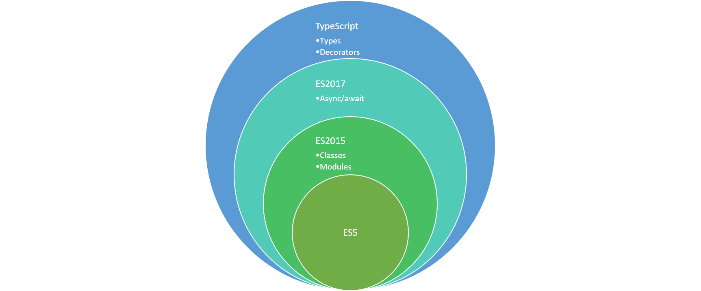
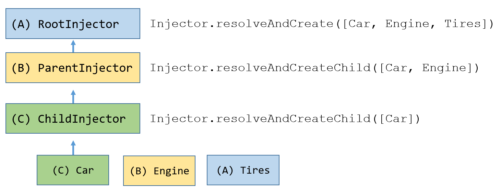
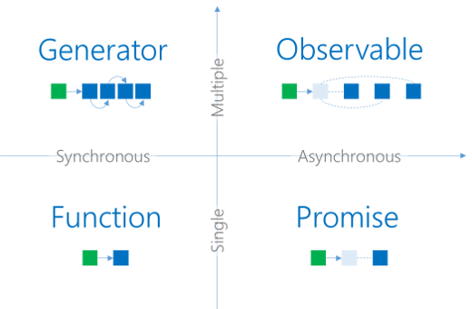
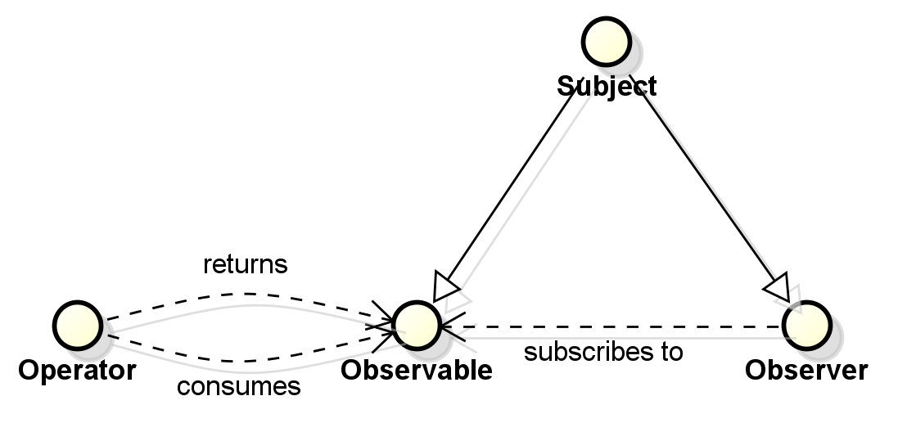

Angular 2
The hero is back!

André Werlang (@awerlang)
Today's Mission
- Remove barrier to TypeScript
- Get an app running is easy
- Understand how it works
Agenda
- Myths & Facts
- Getting Started
- Features
- Elements
- Final Remarks
Angular 2 myths
- Requires TypeScript
- Is Virtual DOM based
- Doesn't support two-way binding
- Requires a master's degree on bundling tools
- View code is VM friendly
- Depends on experimental features
- Has its own module loading system
- Documentation is terrible
- Run side by side with Angular 1.x
Facts
- Abstracts the DOM away
- But the DOM is still accessible
- As testable as AngularJS 1.x
- Follows semver
- > 30k questions on StackOverflow
- > 9k users on gitter
Getting Started
Powered By

JavaScript

TypeScript

RxJS


TypeScript
Compiler (tsc)
- Targets ES5, ES2015, ES2016...
- Module generation: ES2015, CommonJS, System...
- Emits decorator metadata
- Many static checks
- Watch mode
Language
- Type annotations
- Interfaces
- Enums
- Visibility modifiers
- Auto-properties on constructors
- Structural compatibility
Data Types
- any
- string
- number
- boolean
- null
- undefined
- void
- never
Demo
Migrate from JS
- Declare external definitions
- Add types to every declaration
- Create classes for implicit structures
- Convert constructor functions to classes
- Declare implicit members
- (Optional) Convert anonymous functions to arrow syntax
- (Optional) Use block-scoped bindings (const, let)
https://www.typescriptlang.org/docs/handbook/migrating-from-javascript.html
Angular CLI
A command line interface for Angular projects

Angular CLI
Commands
- Create component
- ng g c <component-name>
- Serve
- ng serve
- Build production, offline compiler
- ng build --prod --aot
- Linter
- ng lint
- Test
- ng test
Angular Material
Install
npm install --save @angular/material
import { MaterialModule } from '@angular/material';
@NgModule({
imports: [MaterialModule.forRoot()],
...
})
export class PizzaPartyAppModule { }
@import '~@angular/material/core/theming/prebuilt/deeppurple-amber.css';Features
Components

Components
Hierarchical

Data Binding

Dependency Injection

D.I.
Hierarchical
Change Detection
It's interactive! Click on any element!
Takeaways
- Change detection happens top-down
- Needs to stabilize in a single round
- Shared, mutable structures is a no-go
- On Push performs better (and is not that hard!)
Zones

Zones
No more:
- $q
- $timeout
- $scope.$apply (well, almost)
- $scope.$$phase!!
Observables
Observables
Sample observable
const inputChanged = Observable.fromEvent(inputElement, 'input')
.map(ev => ev.target.value)
.filter(text => text.length > 2)
.debounceTime(500)
.distinctUntilChanged();
const newSuggestionsArrived = inputChanged
.switchMap(q => Observable.ajax.getJSON('search?term=' + q));
newSuggestionsArrived.subscribe(data => {
suggestionsElement.innerHTML = data.map(it => `${it} `)
.join('');
});
<div>{{newSuggestionsArrived | async}}</div>
Decorators
They augment:
- Classes
- Properties
- Methods
- Parameters
@frozen class Foo {
@configurable(false) @enumerable(true) method() {}
}
https://tc39.github.io/proposal-decorators/ https://www.typescriptlang.org/docs/handbook/decorators.html
Elements
Components
Provides a context for data and events,
supports template, styling,
can have services injected
and is change detected
* A directive is a component with no template.
Components
import { Component } from '@angular/core';
@Component({
selector: 'app-root',
templateUrl: './app.component.html',
styleUrls: ['./app.component.css']
})
export class AppComponent {
topics = ['commits', 'branches', 'remotes'];
actions = ['list', 'create', 'delete'];
onGoClick() {
// TODO
}
}
Components
Inputs & Outputs
import { Component, Input, Output, EventEmitter } from '@angular/core';
@Component({
selector: 'my-component',
templateUrl: './my.component.html',
styleUrls: ['./my.component.css']
})
export class MyComponent {
@Input() input: DataType;
@Output() event = new EventEmitter<DataType>(false);
onEvent(value) {
this.event.emit(value);
}
}
Templates
Composes the view with an HTML-like syntax,
interpolates text and data, binds events,
and includes other components.
Templates
<md-chip-list>
<md-chip *ngFor="let topic of topics">{{topic}}</md-chip>
</md-chip-list>
<button md-button color="primary" (click)="onGoClick()">Go!</button>
Templates
Inputs & Outputs
<input #myInput [value]="input" (change)="myInput.value">
<input [(ngModel)]="field">
Styling
Styles a component view, supports view encapsulation.
Styling
:host {
display: block;
max-width: 500px;
font-family: Roboto,"Helvetica Neue",sans-serif;
}
.go {
margin-top: 8px;
float: right;
}
md-divider {
clear: both;
}
Animations
Declarative transitions and animations,
with state triggers and synchornization support.
Animations
animations: [
trigger('flyInOut', [
state('in', style({transform: 'translateX(0)'})),
transition('void => *', [
style({transform: 'translateX(-100%)'}),
animate(100)
]),
transition('* => void', [
animate(100, style({transform: 'translateX(100%)'}))
])
])
]
<md-chip *ngFor="let topic of topics" [@flyInOut]="'in'">...</md-chip>
Services
Encapsulates business logic
and shares data among components
Services
import { Injectable } from '@angular/core';
@Injectable()
export class TipsService {
match(topic, action) {
// TODO
}
}
import { TipsService } from './tips.service';
export class AppComponent {
constructor(private tips: TipsService) { }
onGoClick() {
const matchingTips = this.tips.match(this.topic, this.action);
}
}
NgModules
Organizes elements and creates reusable modules.
NgModules
import { NgModule } from '@angular/core';
import { BrowserModule } from '@angular/platform-browser';
import { MaterialModule } from '@angular/material';
import { AppComponent } from './app.component';
import { TipsService } from './tips.service';
@NgModule({
declarations: [AppComponent],
imports: [
BrowserModule,
MaterialModule.forRoot(),
],
providers: [TipsService],
bootstrap: [AppComponent]
})
export class AppModule { }
Testing
Components
beforeEach(() => {
TestBed.configureTestingModule({
imports: [
MaterialModule.forRoot(),
],
declarations: [
AppComponent
],
providers: [{ provide: TipsService, useValue: tipsService }],
});
TestBed.compileComponents();
});
Components
it('should render results', async(() => {
const topicChip: DebugElement = fixture.debugElement
.query(By.css('.topics')).query(By.directive(MdChip));
const actionChip: DebugElement = fixture.debugElement
.query(By.css('.actions')).query(By.directive(MdChip));
topicChip.triggerEventHandler('click', null);
actionChip.triggerEventHandler('click', null);
goBtn.triggerEventHandler('click', null);
fixture.detectChanges();
expect(el.querySelector('h4').textContent).toEqual('One tip found');
}));
Services
let service = new TipsService();
beforeEach(() => {
service = new TipsService();
});
describe('getTopics', () => {
it('should work', () => {
expect(service.getTopics())
.toEqual(['changes', 'branches', 'commits', 'remotes']);
});
});
Standard Modules
- Http
- Forms
- Router
Final Remarks
Tools
Platforms
- Angular Universal
- Electron
- Ionic
- NativeScript
- ReactNative
- Windows
UI Components
- Material
- Bootstrap
- Lightning
- Semantic UI
- PrimeNG
- Kendo UI
- wijmo
State Containers
Recommendations
- Employ a redux architecture
- Use unidirectional data flow (OnPush strategy)
- Learn about containers & presentational components
- Turn on static checks for TypeScript